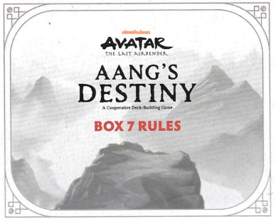

CAIXA 7 REGRAS
OBJETIVO
Como nas Caixas anteriores, derrote todos os
e complete todos os Objetivos antes que a Nação do Fogo chegue ao final do Caminho de Rastreamento.
NOVO: Para derrotar o Senhor do Fogo Ozai e completar o Objetivo final, os jogadores devem primeiro ajudar Aang a desbloquear todos os 7 Chakras. Veja Chakras.
COMPONENTES DA CAIXA 7
1 CARTA DE RECOMPENSA
7 CARTAS DE CHAKRA
3 CARTAS DE SUPORTE
(Geral, Ar, Água, Terra, Fogo)
4 CARTAS DA NAÇÃO DO FOGO
7 CARTAS DE OBJETIVO
2 CARTAS DE ADVERSÁRIO
CONFIGURAÇÃO DA CAIXA 7
Antes de configurar a Caixa 7, remova quaisquer cartas das Caixas anteriores que não passam para a Caixa 7. Isso inclui: Long Feng, Hama, Passaporte Beifong, Dock/Xu/Bushi e todas as cartas de Objetivo da Caixa 6.
Não embaralhe as cartas de Chakra. Coloque o baralho virado para baixo ao lado do tabuleiro e revele a primeira carta de Chakra "Chakra da Terra" ao lado do baralho. (Veja Chakras abaixo.)
Antes de adicionar as cartas da Caixa 7 ao baralho, localize a carta Ozai e reserve-a. Embaralhe as cartas restantes e, em seguida, coloque Ozai no final do baralho. Ozai deve sempre ser o último que você enfrenta na Caixa 7 e você não pode Defletir Ozai. Ao usar a habilidade Defletir em outros , coloque-os imediatamente acima de Ozai no baralho.
Caso contrário, siga a mesma configuração da Caixa 6, incluindo revelar 3 cartas. Certifique-se de ter separado as cartas de Dobra das cartas de Suporte Gerais e as colocado em suas respectivas pilhas antes de embaralhar. Lembre-se: NÃO EMBARALHE as cartas de Objetivo e Recompensa. Coloque a pilha no Tabuleiro de Jogo e revele o Objetivo 7.1 "APRENDA A ORIGEM DA DOBRA DE FOGO". Para as cartas de Suporte, e , adicione as novas cartas da Caixa 7 às cartas restantes das Caixas 1 a 6 antes de embaralhar.
PREPARE SEU HERÓI
Siga a configuração do Herói da Caixa 6, selecionando um Herói e pegando a carta de Habilidade Mestre daquele Herói e o baralho de 10 cartas iniciais, juntamente com quaisquer cartas de Recompensa das Caixas 1 a 6 que também sejam cartas iniciais para seu Herói, conforme listado abaixo.
• Aang - 10 cartas iniciais originais mais Estado Avatar e Appa
• Sokka - 10 cartas iniciais originais mais Suki, Espírito da Lua Yue, Pergaminho do Eclipse Solar e Espada de Meteorito
• Katara - 10 cartas iniciais originais mais Pergaminho de Dobra de Água, Haru, Dobra de Suor e Dobra de Sangue
• Toph - 10 cartas iniciais mais Dobra de Areia e Dobra de Metal
• Zuko - 10 cartas iniciais
Você NÃO começa o jogo com nenhuma das outras cartas de Suporte que adquiriu ao jogar a Caixa 6. Essas cartas devem ter sido devolvidas aos seus baralhos de suprimentos e embaralhadas durante a configuração. Como nas primeiras 6 Caixas, embaralhe e empilhe suas cartas iniciais de Herói viradas para baixo e, em seguida, compre 5 cartas.
VENCENDO O JOGO:
Na Caixa 7, a Condição de Fim de Jogo muda ligeiramente. Como antes, os Heróis devem derrotar todos os e completar todos os Objetivos para vencer. No entanto, eles também devem ajudar Aang a desbloquear todos os 7 Chakras. O Objetivo final da Caixa 7 só será concluído se Ozai for derrotado e os Heróis só podem colocar em Ozai se ele tiver sido revelado E todos os 7 Chakras tiverem sido desbloqueados. Os heróis devem planejar manter um ritmo constante para completar todas as 3 tarefas - , Objetivos e Chakras - para vencer o jogo.
JOGABILIDADE
Siga os mesmos passos no seu turno.
Revelar e Resolver
Resolver habilidades da esquerda para a direita.
Verifique e resolva quaisquer Efeitos de Objetivo.
Jogue cartas de Suporte e use Habilidades de Herói.
CHAKRAS
1 Nome do Chakra.
2 Objetivo.
3 Ordem dos cartões
Algumas cartas de Chakra exigem símbolos de dados para desbloquear. Para desbloquear esses Chakras, você deve obter cartas de Suporte que lhe permitam rolar os dados de Elemento. Os primeiros Chakras exigem apenas rolar um único símbolo, mas os Chakras posteriores exigem uma combinação de símbolos. Use as fichas extras do estoque para cobrir os símbolos que você rolou. Quando uma rolagem de dado é atribuída a um Chakra, os Heróis NÃO ganham também o benefício regular da rolagem de dado. Assim que todos os requisitos para desbloquear um Chakra forem atendidos, o Herói ativo coleta a carta e a próxima é revelada. A qualquer momento, um Herói pode remover uma carta de Chakra coletada do jogo para rolar novamente qualquer dado que acabou de ser rolado. Você deve usar o resultado da nova rolagem em vez da rolagem original.
Por exemplo, desbloquear o Chakra da Terra é o objetivo atual. O Herói ativo pode rolar
+1
+1
OU para desbloqueá-lo. O Herói ativo joga "Restaurar Equilíbrio" e escolhe rolar o dado de Fogo, que tem uma chance maior de rolar
+1
+1
. O resultado é
+1
+1
, que desbloqueia o Chakra. O Herói ativo coleta a carta do Chakra da Terra e agora pode gastá-la a qualquer momento para rolar novamente um dado, mesmo no turno de outro Herói. Eles então revelam a próxima carta, que é o Chakra da Água, e eles podem trabalhar imediatamente para desbloquear o Chakra da Água se tiverem cartas de Suporte adicionais que lhes permitam rolar dados.
Se os Heróis desbloquearem todos os 7 Chakras, completarem todos os Objetivos e derrotarem todos os Adversários, incluindo Ozai, os Heróis vencem! Comemore! Você acabou com a Guerra dos 100 Anos e restaurou o equilíbrio do mundo!
Como em outras Caixas - se a ficha de Rastreamento chegar ao final do Caminho de Rastreamento, o Avatar é capturado e os Heróis perdem. Redefina o jogo e tente novamente!
Para uma experiência mais fácil da Caixa 7, você pode optar por remover as cartas de Chakra. Devolva-os à caixa do jogo. Ozai pode ser derrotado assim que todos os outros Adversários forem derrotados.